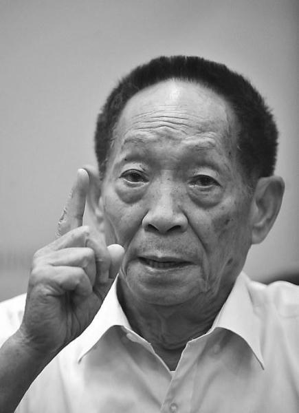

yuanlongqing

Yuan Longping (September 1930-), a native of De 'an County, Jiujiang City, Jiangxi Province, graduated from Southwest Agricultural University (now Southwest University), an expert in hybrid rice breeding in China, an initiator of research and development of hybrid rice in China, and is known as "the father of hybrid rice in the world".
he was elected a member of the Chinese academy of engineering in 1995, the highest national science and technology award in 2000, and a foreign member of the us national academy of sciences in 2006. Yuan Longping has successfully developed "three-line method" hybrid rice, "two-line method" hybrid rice, super hybrid rice phase I and phase II. At the same time, it has proposed and implemented the "three-yield and four-yield project". In 2018, he was awarded the title of reform pioneer by the CPC Central Committee and the State Council.
characters experience
Study experience

On September 7, 1930, Yuan Longping was born in Peking Union Medical College Hospital.
from 1931 to 1936, he lived with his parents in Peiping, Tianjin, Jiujiang, Ganzhou and Hankou.
from August 1936 to July 1938, I studied in Hankou rotary primary school.
from August 1938 to January 1939, I studied in Hunan Hongyi primary school.
from August 1939 to July 1942, I studied in Longmen Hao central primary school in Chongqing.
from August 1942 to January 1943, I studied in Chongqing Fuxing junior high school.
from February 1943 to January 1944, I studied in Ganjiang middle school in Chongqing.
from February 1944 to may 1946, I studied in Chongqing erudite middle school.
from August 1946 to January 1948, I attended high school in Hankou erudite middle school.
in the summer vacation of 1947, he won the first place in the men's 100m freestyle in Hankou competition area when he was in the first grade of high school. He won the second place in the men's 100m freestyle in Hubei province.
From February 1948 to April 1949, I attended high school in the affiliated high school of Nanjing Central University (now high school affiliated to nanjing normal university).
from August 1949 to October 1950, I studied in the agronomy department of Xianghui college in xiaba, Beibei, Chongqing.
from August 1949 to August 1953, the department of agriculture of southwest agricultural university majored in crops.
from November 1950 to July 1953, the departments were reorganized and merged into the department of agronomy of Chongqing's newly-built southwest agricultural college, which continued for 3 years until graduation.
In July 1951, Yuan Longping signed up for the air force in Southwest Agricultural College. He passed the physical examination and political examination. However, due to the need for college students to participate in economic construction, he did not join the army and continued to study in the school.
rice researchIn August 1953, Yuan Longping graduated from the Department of Agriculture of Southwest Agricultural University (now Southwest University). Obey the national unified distribution and teach in Anjiang Agricultural School in Huaihua District of Hunan Province. In the same year, he was assigned to teach in the remote and backward Anjiang Agricultural School at the foot of Xuefeng Mountain in western Hunan.
1953.08-1971.01 teachers of Anjiang agricultural school in Hunan province.
in July 1960, he accidentally discovered a special rice plant in the experimental field of the agricultural school. He used this strain of rice to test and found that its progeny had different properties. Because rice is self-pollinated and there will be no character separation, he deduced that it should be a natural hybrid rice. Then he manually removed the male flowers of rice with the same pistil and gave another variety of pollen to try to produce hybrid varieties.
in the spring of 1961, he sowed the seeds of this mutant plant in the experimental field for starting a business. the results proved that the "stand out from the crowd" plant discovered in 1960 was a "natural hybrid rice". At that time, he was a teacher in an Jiang civilian school, but in the face of the severe famine at that time, he resolved to defeat the threat of hunger with agricultural science and technology and engage in the male sterility test of rice.
on July 5, 1964, he found a "natural male sterile plant" in the experimental rice field. after artificial pollination, he produced hundreds of seeds of the first generation male sterile plant.
In July 1965, Yuan Longping detected 6 sterile plants from more than 14,000 rice panicles one by one. In the following two years of sowing, 4 plants successfully propagated 1 ~ 2 generations. His research completely overturned the "asexual hybridization" theory of michurin and lysenko, the traditional classical theories, and deduced that rice also had hybridization advantages. The yield of hybrid rice can be greatly increased by cultivating male sterile line, male sterile maintainer line and male sterile restorer line.
on February 22, 1964, he married Deng ze, an agricultural technology cadre.
from 1964 to 1965, during the two-year rice flowering season, he and his research team conducted cross breeding experiments in rice fields. Six natural male sterile plants were found in the paddy field. After two years of observation and testing, he has a rich understanding of rice male sterile materials. according to the accumulated scientific data, he has been working for about 12 years after graduating from university and was published in the "scientific bulletin" no 4, vol. 17, 1966.
in July 1965, among Nantes, Zaojing 4, Shengli indica and other rice varieties in the paddy field near anjiang agricultural school, more than 14,000 rice spikes were inspected one by one, and a total of 6 plants were found along with the sterile plants found last year. After two consecutive years of spring sowing and autumn turning, a total of 4 plants have propagated for 1 ~ 2 generations.
on February 28, 1966, the first paper "male sterility of rice" was published in the fourth issue of volume 17 of the semimonthly science bulletin edited by the Chinese academy of sciences. In May, Comrade Zhao quartz, director of the Ninth Bureau of the State Science and Technology Commission, received great attention after learning the article "Male Sterility of Rice" published by Yuan Longping. In the name of the Ninth Bureau of the State Science and Technology Commission, he wrote to the Hunan Provincial Science and Technology Commission and Anjiang Agricultural University to support the research activities on male sterility of rice in Yuan Longping, pointing out that the research is of great significance and, if successful, will greatly increase the yield of rice. [11] In June, when the Cultural Revolution began, Yuan Longping was hit and the male sterility test of rice was forced to stop.
In April 1967, Yuan Longping drafted the "Breeding Plan for Male Infertility Rice Lines in Anjiang Agricultural University" and submitted it to the Provincial Science and Technology Commission and Qianyang Regional Science and Technology Commission. In June, a research group on male sterility of rice was formally established at Qianyang Agricultural School (renamed Anjiang Agricultural School) composed of Yuan Longping, Li Bihu and Yin Huaqi.
On April 30, 1968, Yuan Longping planted more than 700 rare seedlings of sterile materials in the No.7 field of Zhonggupan in Anjiang Agricultural School, covering an area of 133 square meters. On the evening of may 18, the sterile seedlings of zhonggu pan 7 field were completely uprooted and destroyed, which became an unsolved mystery. Yuan Longping was heartbroken. On the 4th day after the incident, five remaining seedlings were found in a waste well in the school and the experiment continued.
In the winter of 1969, Yuan Longping, Li Bihu and Yin Huaqi waited until Yuanjiang County in Yunnan Province to speed up the reproduction of sterile materials.
In the summer of 1970, Yuan Longping imported wild rice from Yunnan and planned to cross it in Jingxian County (Anjiang Agricultural College moved to Jingxian County again). However, it did not succeed because of lack of short light treatment. In autumn, Yuan Longping led the scientific research teams Li Bihu and Yin Huaqi to Hainan Island's Nanjiang Farm, Ya County, to conduct research experiments in Hainan with favorable conditions for three-season rice experiments, and to investigate the distribution of wild rice to technicians and workers in the farm.
In the spring of 1971, the Hunan Academy of Agricultural Sciences established the Hybrid Rice Research Collaboration Group, which worked in the Hybrid Rice Research Collaboration Group of the Yuan Longping Provincial Academy of Agricultural Sciences.
in 1973, the cooperation team found the recovery department through cross-examination and overcame the difficulties of the "three departments". In October, Yuan Longping published a paper entitled "Progress in Breeding Three Lines by Using" Wild Abortion "at the Rice Research Conference held in Suzhou, officially announcing that the" Three Lines "of Chinese Indica Hybrid Rice have been matched.
In 1975, Yuan Longping conquered the "Seed Production Pass" and tried to sum up the success of seed production techniques.
In 1977, Yuan Longping published two important papers: Practice and Theory of Hybrid Rice Cultivation and Key Techniques for Hybrid Rice Seed Production and High Yield.
In September 2017, Yuan Longping announced a new achievement in removing heavy metal cadmium from rice at the 2017 National Exhibition of New Rice Varieties and Technologies on-site observation meeting: "Recently, we have a breakthrough technology in rice breeding, which can' knock out' genes containing cadmium or absorbing cadmium from parents. When parents are clean, seeds will naturally be clean."
The super hybrid rice variety "Xiangliangyou 900 (Chaoyou Qianhao)" bred by "Father of Hybrid Rice" Yuan Longping and his team has set another record per mu yield. According to the third-party experts, the per mu yield of this variety of rice is 1149.02kg in the experimental field.
social activitiesin February 1978, he attended the fifth people's congress of China. In March of the same year, he attended the China Science Conference and won the award. In June, he attended the Hunan Provincial Congress of Advanced Educators. In October, he attended the Hunan Provincial Science Conference and won the award.
in October 1978, he was promoted to research fellow of Hunan academy of agricultural sciences.
in April 1979, he attended a scientific research conference convened by the Philippine international rice research institute. at the conference, he read out his paper "hybrid rice breeding in China" in English and made an impromptu defense. the participants unanimously recognized that China's hybrid rice research was in the leading position.
In May 1980, Yuan Longping went to the United States at the invitation of the United States for technical guidance on hybrid rice seed production. In October, he went to the Philippine International Rice Research Institute for technical guidance and cooperative research.
from 1982 to 1986, I went to the Philippines international rice research institute 1 ~ 3 times a year for cooperative research.
in August 1983, he visited the United States for the second time at the invitation of the United States to investigate the hybrid rice trial and give technical guidance.
In 1985, Yuan Longping published "Discussion on Super-high-yield Breeding of Hybrid Rice" and proposed four ways to breed super-high-yield combinations with strong heterosis, of which nuclear hybrid is the one with the greatest effort. However, many years of breeding practice have not produced a combination that meets the production requirements. He jumped out of the research of nuclear hybrid decisively and quickly and explored new and more promising research fields.
in 1986, weiyou 49, a new early hybrid rice combination, was invited to attend an international symposium on "potential for crop improvement through apomixis" held near Milan, Italy. In October, the world's first international symposium on hybrid rice was held in Changsha. At the symposium, Yuan Longping made a special academic report on "Research and Development Status of Hybrid Rice" and put forward a strategic vision for the future development of hybrid rice, which was approved by experts and scholars attending the meeting and written into the conference documents.
from September 25 to October 3, 1989, he was invited to attend the commendation conference for Chinese model workers and advanced workers held in Beijing to attend the celebration activities for the 40th anniversary of the national day.
from August 14 to August 22, 1991, at the invitation of the Japanese society, he went to Japan to make an academic report on the new progress of two-line hybrid rice research. From September 29 to October 10, attend the Rockefeller foundation annual meeting in the United States.
from January 13 to January 15, 1992, he attended and presided over the international rice apomixis conference held in Changsha, Hunan. From April 20 to April 27, he led the Chinese delegation to the 2nd International Symposium on Hybrid Rice held at the Philippine International Rice Research Institute. From July 28 to August 4, he was entrusted by the UN Food and Agriculture Organization to go to India to make an academic report on hybrid rice. From October 22 to November 13, I was entrusted by the UN Food and Agriculture Organization to go to India as the chief consultant to guide hybrid rice technology for 3 weeks.
From April 10 to April 22, 1993, she went to Brown University in the United States to attend the Philippines-Ginst Hunger Relief Award ceremony, and her wife Deng was invited to accompany her. On May 19, he was employed as a consultant of Hunan Overseas Students Association. On May 20, he was appointed as a member of the communication evaluation expert group of doctoral instructors of the Academic Degrees Committee of the State Council. From November 17 to December 10, he was entrusted by the UN Food and Agriculture Organization to go to India for the third time to teach hybrid rice technology. On December 30, an article entitled "Be cautious about the large-scale promotion of corn and rice" was written and forwarded by the Hunan Provincial Department of Agriculture with Xiang Nong Han (1993) Zi No.113, which played an important role in stabilizing Hunan's grain output.
from February 28 to March 12, 1994, he went to Houston, United States, and initialed an agreement with the United States rice technology corporation to develop two-line hybrid rice. On May 14, I went to Indonesia to attend the Rockefeller Foundation annual meeting. From September 23 to September 25, Yuan Longping presided over the meeting of the head of the China Hybrid Rice Expert Advisory Group in Changsha, Hunan Province.
in February 1995, U.S. rice technology company attended the annual academic conference.
in July 1996, he attended the review meeting of the "863" major technical projects held in Zhangjiajie city, Hunan province. In August, he attended the two-line hybrid rice field meeting held in Shuangliu County, Sichuan Province. On September 11, he attended the China Science and Technology Top Ten Award Conference jointly held by the Central Propaganda Department and the China Federation of Trade Unions in the Great Hall of the People in Beijing and delivered a speech entitled "Climbing the New Peak of Hybrid Rice Research and Solving the Problem of Chinese Eating Is My Lifelong Pursuit". On October 18, he attended a symposium held by the he Liang he Li foundation in Beijing and gave an academic report on "from the perspective of hybrid rice breeding, China has the ability to solve the problem of food production". In November, he attended the Rockefeller Foundation International Symposium on Rice Biotechnology in East Asia held in Hangzhou and gave an academic report. Attended the "3rd International Conference on Hybrid Rice" in India. In December, he attended a symposium of agricultural experts chaired by Vice Premier Jiang Chunyun to discuss major agricultural harvest plans.
in January 1997, he attended the working conference on five major crops in five provinces convened by the Ministry of agriculture. In March, he went to Houston to attend the annual meeting of rice technology company and was invited to Myanmar to guide hybrid rice production. In April, he attended the "Second China International Agricultural Science and Technology Annual Conference International Seed Industry Symposium" held in Beijing. Lectured in the "863" Program held by Anhui Academy of Agricultural Sciences in 1997 in the two-line hybrid (japonica) rice technical training class. In September, he attended and presided over the "International Symposium on Utilization of Heterosis of Two-line Crop Law" in Changsha and gave an academic report entitled "Current Situation and Prospect of Utilization of Heterosis of Two-line Crop Law". In November, he took part in the "863" program annual meeting on agriculture in the biological field held in Wuhan. In the 6th issue of hybrid rice, an important paper on super-high yield breeding of hybrid rice was published.
in August 1998, when he was invited to beidaihe on vacation, he submitted to premier Zhu Rongji a report on "applying for special support from premier fund for super hybrid rice breeding", which was highly valued. In September, he was invited to Egypt to attend the 19th session of the International Rice Committee. He was interviewed by Yang Lan, the host of Hong Kong Phoenix TV's Chinese TV program. In October, he attended the "6th International Conference on Molecular Biology of Rice" held in Shanghai. In November, he attended the annual report meeting on the "Ninth Five-Year Plan" in the biological field of the "863" Plan held in Beihai, Guangxi.
in December 1998, he attended the "863" program "super hybrid rice" project meeting held in Zhaoqing, Guangdong.
at the end of April 1999, he attended the "may day" party organized by the China Federation of trade unions and China central television, and took the stage as a guest to pay tribute to the Chinese audience. In June, he went to Wuyi, Zhejiang to preside over the "two-line hybrid rice" on-site meeting. "Yuan Longping Agricultural High-tech Co., Ltd." was officially established. In December, he attended the grand commendation conference of "outstanding professional and technical talents" jointly held by the central propaganda department, the Ministry of science and technology and the Ministry of personnel in the great hall of the people in Beijing, won the gold medal of "outstanding professional and technical talents" and delivered a speech entitled "developing hybrid rice to benefit the people of the world". Attended the "863" Program's 1999 Annual Meeting on Agriculture in Biology held in Shenzhen.
from the end of March to the beginning of April 2000, he went to the Philippines international rice research institute to participate in the rice research conference, read the paper "super hybrid rice breeding" and made an on-site investigation on the hybrid rice test base of Hunan hybrid rice research center in the Philippines. From July 5 to July 7, Yuan Longping went to Anqing, Anhui Province to host a demonstration site meeting of two-line high-quality early hybrid rice in China. On August 25 and September 10, China's super hybrid rice field acceptance meeting was held in Chenzhou, Hunan. The first phase of super rice reached the standard. In the same year, the two-line hybrid rice research project under the national "863" program sponsored by Yuan Longping passed the acceptance of the Ministry of Science and Technology.
in may 2001, they went to Vietnam to participate in the "policy support meeting on accelerating the development of large-scale hybrid rice in Asia" hosted by the UN food and agriculture organization, and Bangladesh participated in the fourth technical Committee meeting of the hybrid rice project of the international rice institute and the Asian development bank. In July, he visited the Chinese University of Hong Kong and gave an academic report. In December, upon the recommendation of President Jiang Zemin, Academician Yuan Longping visited Venezuela to investigate the possibility and prospect of popularizing hybrid rice.
In January 2002, the second "Yuan Longping Agricultural Science and Technology Award" was awarded. In July, they went to Hong Kong to attend biotechnology and crop improvement conferences held at the Chinese University of Hong Kong. Go to Bangkok, Thailand to attend the "20th International Rice Committee Meeting" hosted by the United Nations Food and Agriculture Organization.
in March 2003, he went to Uruguay to attend an academic conference and gave an academic report on "development of hybrid rice in China".
in March 2004, he became the chief scientist of Tianjin branch of the national hybrid rice engineering technology research center. In August, Academician Yuan Longping visited Malaysia at the invitation of the Malaysian Head of State Foundation.
In 2005, Yuan Longping directed the team of researchers to introduce the peripheral genome into the hybrid rice parental strain through spike and stem injection. This achievement was published in "Agricultural Science and Technology" (English Version), Volume 6, Issue 3. On the morning of October 19, at the invitation of the Ministry of Foreign Affairs, Yuan Longping made a report on hybrid rice in the fourth class of Ambassador Counsellor of the Ministry of Foreign Affairs.
From September 20 to 21, 2006, Academician Yuan Longping attended the 3rd China Citizen Ethics Forum organized by the Central Propaganda Department, the Chinese Ethics Society, the Propaganda Department of the Hunan Provincial Party Committee and the Changsha Municipal Party Committee and made a speech.
In 2006, researchers of Yuan Longping's guiding team published an article in "China Science" (Series C Life Science), Volume 36, Issue 4, announcing the introduction of antifungal genes into hybrid rice through gene gun to obtain rice blast resistant materials.
On March 16, 2007, Yuan Longping went to the United College of the Chinese University of Hong Kong to participate in the "Distinguished Scholars Visit" and give an academic report. From April 27 to May 7, he went to Washington to attend the annual meeting of the American Academy of Sciences and officially became a foreign academician of the American Academy of Sciences. He also visited Houston's American Rice Technology Company and San Francisco's Mendel Company.
served as torchbearer 001 for the 2008 Beijing Olympics in June 2008.
On August 28, 2009, he returned to his alma mater Southwest University to give an academic speech.
On the evening of September 6, 2010, Hunan Satellite TV presented Academician Yuan Longping and the first China Hybrid Rice Conference being held here with a performance entitled "For the Harvest of the Earth".
in January 2011, one of the outstanding representatives of "China's national image film-characters". [30] On September 19, the third stage of super rice was successfully tackled with a target yield of 900 kg per mu. The yield of the 100 mu experimental field in Longhui County, Hunan Province reached 926.6 kg per mu.
on August 23, 2012, Qingdao agricultural university gave a thematic report entitled "developing hybrid rice to ensure food security" and was hired by Qingdao agricultural university as a senior consultant.
In September 2015, Yuan Longping stepped down as director of Hunan Hybrid Rice Research Center.
In October 2016, Yuan Longping served as director and chief scientist of Qingdao Haishui Rice Research and Development Center.
In July 2017, Yuan Longping served as the chief professor of Qingdao Hairice College.
On October 10, 2017, Yuan Longping returned to his alma mater Southwest University and awarded the first Southwest University Yuan Longping Prize and bursary, which mainly rewards students with excellent academic and quality related to agricultural disciplines. After evaluation, 10 agricultural students were awarded the first Yuan Longping Scholarship Grand Prize and the 123rd Prize, including 5 doctoral students, 2 master students and 3 undergraduate students.
In May 2018, the team of Qingdao Haishui Rice Research and Development Center led by Yuan Longping measured the yield of rice planted experimentally in Dubai's tropical desert, with a maximum yield of more than 500 kg per mu.